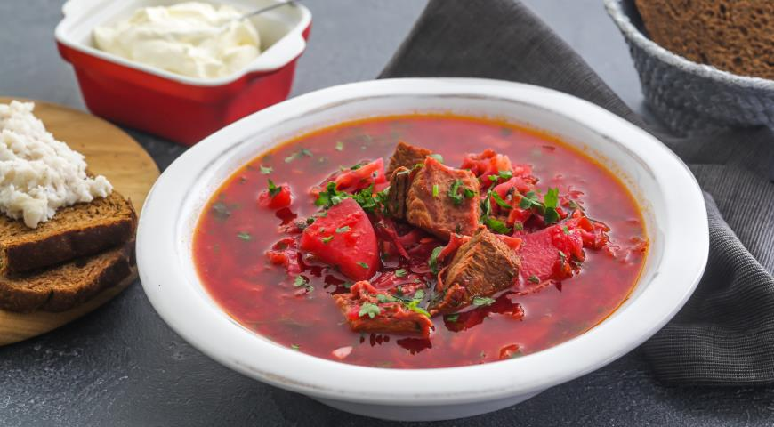
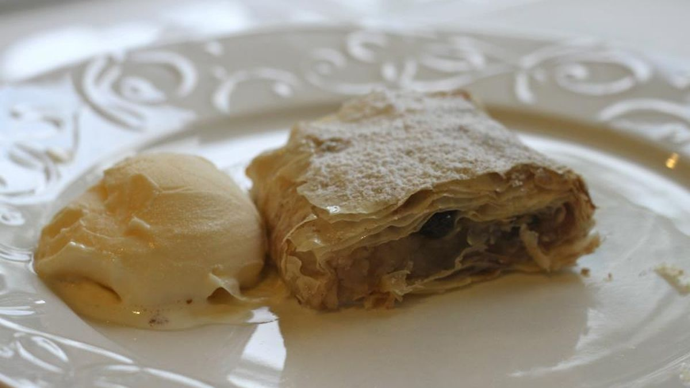

Найпопулярніші страви на сайті
 
Про сайт
Цей сайт допоможе вам приготувати смачні страви, швидко та з радістю. Ми пропонуємо рецепти та кулінарні поради для домашніх кухарів. Допомога у створенні «кухонних перемог» – це те, чим ми займаємось.